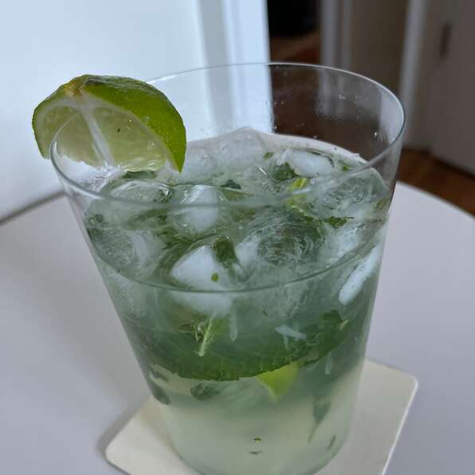

Mojito

Description
This is an authentic recipe for mojito. I sized the recipe for one serving, but you can adjust it accordingly and make a pitcher full. It's a very refreshing drink for hot summer days. Be careful when drinking it, however. If you make a pitcher you might be tempted to drink the whole thing yourself, and you just might find yourself talking Spanish in no time! Tonic water can be substituted instead of the soda water but the taste is different and somewhat bitter.
Ingredients
- 10 fresh mint leaves
- ½ lime, cut into 4 wedges
- 2 tablespoons white sugar, or to taste
- 1 cup ice cubes
- 1 ½ fluid ounces white rum
- ½ cup club soda
Steps
- Place mint leaves and 1 lime wedge into a sturdy glass. Use a muddler to crush the mint and lime to release the mint oils and lime juice. Add 2 more lime wedges and the sugar, and muddle again to release the lime juice. Do not strain the mixture. Fill the glass almost to the top with ice. Pour the rum over the ice, and fill the glass with carbonated water. Stir, taste, and add more sugar if desired. Garnish with the remaining lime wedge.